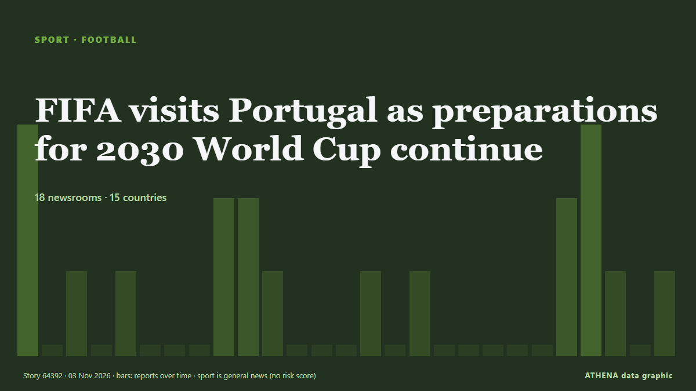

FIFA visits Portugal as preparations for 2030 World Cup continue

A FIFA delegation is in Portugal this week to review preparations for the 2030 World Cup, which the country will co-host with Spain and Morocco. from The Portugal News
Reported independently by 18 outlets in 15 countries since 27 Oct, first by Hespress English; coverage is fading. Sport and culture stories are filed, not risk-assessed. Confidence is 91% (high), with 18 independent outlets corroborating it and an average source reliability of 73%. Newsrooms by country: Morocco (2), South Korea (2), Portugal (2). Coverage: 27 Oct to 3 Nov, 168 hours.
What changed: 3 new reports from 3 newsrooms in the 24 hours to 3 Nov.
First reported as: FIFA to inspect candidate cities for 2030 World Cup in Spain, Portugal and Morocco
At a glance
Selected, scored and written by ATHENA's published methodology. No editor intervenes in individual events. How this is produced ›
| 27 Oct 23:18 UTC | 3 |
|---|---|
| 28 Oct 05:18 UTC | 0 |
| 28 Oct 11:18 UTC | 1 |
| 28 Oct 17:18 UTC | 0 |
| 28 Oct 23:18 UTC | 1 |
| 29 Oct 05:18 UTC | 0 |
| 29 Oct 11:18 UTC | 0 |
| 29 Oct 17:18 UTC | 0 |
| 29 Oct 23:18 UTC | 2 |
| 30 Oct 05:18 UTC | 2 |
| 30 Oct 11:18 UTC | 1 |
| 30 Oct 17:18 UTC | 0 |
| 30 Oct 23:18 UTC | 0 |
| 31 Oct 05:18 UTC | 0 |
| 31 Oct 11:18 UTC | 1 |
| 31 Oct 17:18 UTC | 0 |
| 31 Oct 23:18 UTC | 1 |
| 01 Nov 05:18 UTC | 0 |
| 01 Nov 11:18 UTC | 0 |
| 01 Nov 17:18 UTC | 0 |
| 01 Nov 23:18 UTC | 0 |
| 02 Nov 05:18 UTC | 0 |
| 02 Nov 11:18 UTC | 2 |
| 02 Nov 17:18 UTC | 3 |
| 02 Nov 23:18 UTC | 1 |
| 03 Nov 05:18 UTC | 0 |
| 03 Nov 11:18 UTC | 1 |
| 03 Nov 17:18 UTC | 1 |
Why these numbers
Importance
Risk
Confidence
The reporting — who reported it, and when
headline as published · opens the original- Hespress English · MoroccoFIFA to inspect six Moroccan cities as race to host 2030 World Cup final continues
- Express Tribune · PakistanFIFA to visit potential 2030 World Cup host cities
- Korea Herald · South KoreaFIFA to inspect candidate cities for 2030 World Cup in Spain, Portugal and Morocco
- Portugal Resident · PortugalPJ police arrest Spain’s most wanted female fraudster
- Stuff · New ZealandRugby World Cup carrot: Why Highlanders coach backs All Blacks to fire in 2027
- The Korea Times · South KoreaMoreno tries to deal with uncertainty in Korean football
- 24.kg (English) · KyrgyzstanFIFA U15 World Cup and Festival: Kyrgyzstan loses to China
- Tehran Times · IranIran come sixth at FIFA U15 World Cup & Festival 2026
- 24.kg (English) · KyrgyzstanFIFA U15 World Cup & Festival: Kyrgyzstan finishes 52nd among 189 teams
- Anadolu Agency (English) · TurkeyFIFA plans to double 2027 Women's World Cup prize money to $220M: Report
- AzerNews · AzerbaijanArsene Wenger praises FIFA U-15 tournament in Baku as Spain claims title
- Trinidad Express · Trinidad and TobagoSpain win inaugural FIFA U15 World Cup
- The Hollywood Reporter · United StatesMidterm Elections and FIFA World Cup Power Record-Breaking Quarter for Fox Corp.
- Sky News (World) · United KingdomFIFA to share documents relating to World Cup sell-off plan
- The Irish News (Belfast) · United KingdomGianni Infantino’s World Cup sell-off documents to be shared with FIFA Council
- CNA (Channel NewsAsia) · SingaporeFIFA to grant access to documents from scrapped World Cup sell-off plan
- MyJoyOnline · GhanaFIFA to share ‘key documents’ over World Cup sell-off plan
- Nile Post · UgandaFifa to share 'key documents' over World Cup sell-off plan
- The Portugal News · PortugalFIFA visits Portugal as preparations for 2030 World Cup continue
- Hespress English · MoroccoMorocco proposes sweeping FIFA tax exemptions for 2030 World Cup